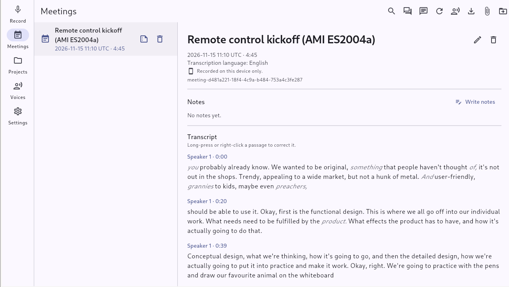
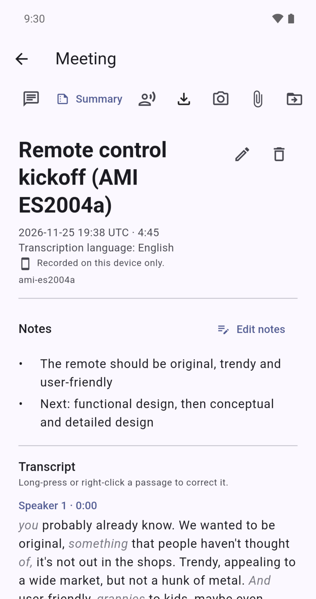

Transcribes on the device
Whisper runs on your phone or computer, even in airplane mode. Add a glossary so names and jargon come out right, and correct any passage with a long press.
Free forever · Offline · No account
Koalino records your meetings, in the room or online, transcribes them right on your phone or computer, and knows who said what. Notes, photos and files sit next to the transcript, and your devices keep each other in sync, encrypted, with no cloud in between.
Android · Windows · Linux · macOS · Free software (GPL)


Built for people who talk about things that shouldn't end up on someone else's server.
Whisper runs on your phone or computer, even in airplane mode. Add a glossary so names and jargon come out right, and correct any passage with a long press.
Speaker separation splits the conversation by voice. Name a voice once and Koalino recognizes it in the next meeting. Voices are stored as numbers, never as audio.
Get a summary or ask "what did we decide?" using the AI you choose: your own Claude or ChatGPT subscription, a cloud provider, or a model on your computer. Or none.
Every transcript, with its notes, whiteboard photos, slides and files, kept together, encrypted, and on all your devices. Group meetings into projects and search them all.
Pair your phone and computers with a QR code. They exchange notes directly and end to end encrypted, and catch up whenever they meet again. Fully works offline.
Put your phone on the table for an in-person meeting. On a computer, Koalino records calls in any app (Zoom, Teams, Google Meet, Webex…) and offers to start when one begins. For Teams in the browser, the extension adds live captions and shared slides.
There is no Koalino cloud, no account, no analytics and no ads. Recordings are deleted once transcribed, everything kept is encrypted with a key in your device's keychain, and backups are encrypted with your passphrase before they leave the app. The code is public, so anyone can check.
Read the privacy policy →Free in both senses of the word, and it stays that way.
Koalino is free software under the GNU GPL, version 3 or later. Anyone may use it for any purpose, read its code, change it and share it, and every copy or changed version passed on must stay just as free. Nobody, including us, can take that away.
No price, no subscription, no "pro" tier, no ads, no trial that runs out. Koalino runs on your own devices and syncs them directly, so there is no cloud bill for anyone to pass on to you.
Summaries can optionally use an AI service you connect yourself; if that service charges, it bills you directly. Koalino itself never asks for money.
Version 0.2.0 preview · free · release notes and checksums
Phones with a 64-bit processor. Allow installs from your browser when Android asks.
Windows 10 and 11, on 64-bit PCs and ARM64 laptops. Installs for you alone, no administrator rights needed.
64-bit PCs and ARM64 computers, with a menu entry and icon. Pick the package for your distribution.
macOS 12 or newer, Intel and Apple silicon. Experimental: not yet tried on real Macs.
Records Teams meetings joined in the browser. Needs the Koalino app on the same computer.
An always-on Linux box that syncs and transcribes for your devices, with a web dashboard.
New to Koalino? The step-by-step guide walks you through installing it, pairing your devices and recording your first meeting. Koalino is a preview: back up your meetings from Settings, and tell us what breaks.